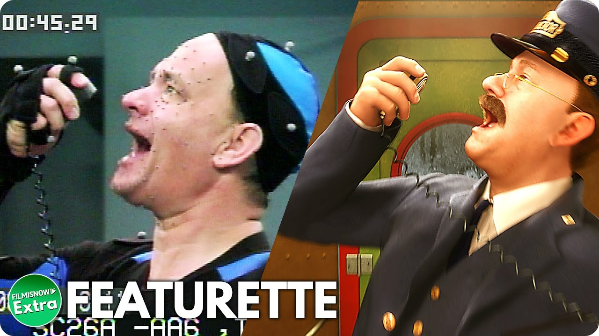

The Film
In 2004, The Polar Express was brought to life in a groundbreaking animated film directed by Robert Zemeckis. Featuring Tom Hanks in multiple roles, the film utilized innovative motion capture technology to create a visually stunning experience that felt both magical and immersive. The animation brought the characters and snowy landscapes to life in a way that was unprecedented at the time, captivating audiences of all ages. The film closely follows the storyline of the book while expanding on the themes of belief, hope, and the spirit of Christmas. The addition of music, including the iconic song "Believe," composed by Glen Ballard and Alan Silvestri, adds a layer of emotion and warmth to the narrative. The film has not only introduced the story to a new generation but has also become a holiday staple for families, fostering a deeper connection to the original tale. Through its blend of technology and storytelling, The Polar Express continues to inspire a sense of wonder and nostalgia.
The Polar Express Train Rides
Across the country, various train experiences recreate the magic of The Polar Express, offering families a unique way to celebrate the holiday season. Many of these festive train rides operate from late November through December, inviting guests to board beautifully decorated trains reminiscent of the story. As families settle in, they are greeted with the comforting aroma of hot cocoa, adding to the immersive experience. The journey typically features lively storytelling, sing-alongs of holiday classics, and encounters with characters from the tale, including the Conductor and Santa himself. Each ride is designed to evoke the spirit of the book and film, making it a memorable adventure for children and adults alike. Beyond just a train ride, these experiences foster a sense of community and togetherness, allowing families to create cherished memories. For many, attending a Polar Express train ride becomes a beloved holiday tradition, passed down through generations.
Fun Facts
The Polar Express is filled with fascinating details that enhance its magical allure. One interesting fact is that the story was inspired by Chris Van Allsburg’s childhood memories of believing in Santa Claus, reflecting the universal theme of faith in the unseen. The film adaptation, released in 2004, was notable for its use of motion capture technology, setting a new standard for animated films. Additionally, the film's production was a collaborative effort that involved hundreds of artists and technicians, showcasing the dedication behind its visual storytelling. Over the years, The Polar Express has evolved into a cultural phenomenon, with numerous adaptations and events celebrating its legacy. The train rides inspired by the story have spread across various regions, bringing the magic of the North Pole closer to families everywhere. Ultimately, The Polar Express continues to enchant audiences, reminding us all of the joy of believing in the magic of Christmas.
Quotes
- “Seeing is believing, but sometimes the most real things in the world are the things we can't see.”
- “The thing about trains… it doesn’t matter where they’re going. What matters is deciding to get on.”
- “You won’t be able to see it until you believe it.”
- “The bell is beautiful and it’s the sound of Christmas. But it only rings for those who truly believe.”